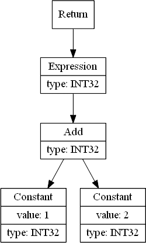
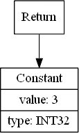
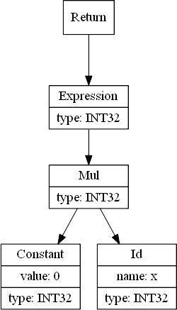
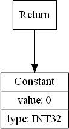
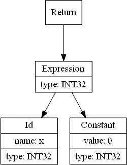
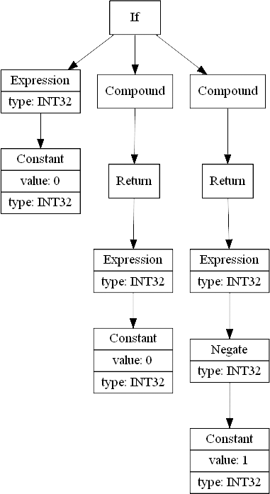
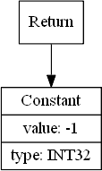
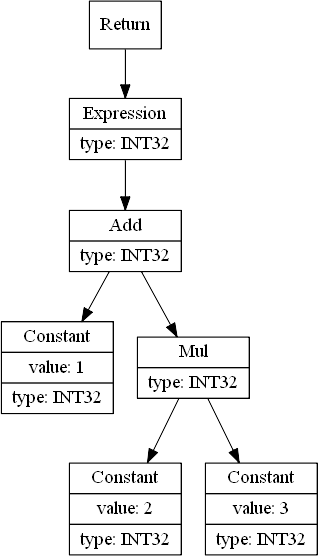
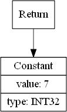

After validating our SimpleC programs both syntactically and semantically, it's now time to analyze the AST tree and do some optimizations before we generate code. My original idea was to make constant folding optimization only, but it turns out that it's really easy to do some other optimizations at the same time, so why not?
It's quite handy to have an AST we can analyze and optimize. By being able to query any node at any time, to remove child nodes and exchange some nodes for others we can easily implement the kind of optimizations we're used to get from regular compilers:
Disclaimer: I'm not a compiler expert. If you find that some concept or definition is being misused here please let me know and I'll update the article.
Let's see some ASTs exemplifying each one of the optimizations to make it clear what we must look for in the ASTs and how we must change them to achieve the optimizations.
Let's see the AST for this little SimpleC program and what we want it to become (note: I'm cutting part of the AST to show only the return branch):
int ConstantFolding()
{
return 1 + 2;
}
|  |  | |||
| AST for 1 + 2 | Optimized AST for 1 + 2 |
To achieve this optimization all we have to do is traverse the AST looking for operators with constant operands, and swap them by a constant which holds the result of the operation. One thing to look out for is the result type. Taking the addition operator as an example, if one operand in an integer and the other a float, the result must have the float type because of implicit type conversion.
The list of all nodes that do constant folding is:
Now let's consider this piece of code:
int ConstantPropagation( int x )
{
return 0 * x;
}
Its AST and what we want it to become after constant propagation are:
|  |  | |||
| AST for 0 * x | Optimized AST for 0 * x |
Right? Well, not quite. For example, what do you expect to be printed by this C code?
#include <stdio.h>
int main( void )
{
int x = 1, y = 1;
x = 0 * ( y += 1 ); // <- Whaaat???
printf( "x=%d, y=%d\n", x, y );
return 0;
}
Yes, that's correct. 0 and 2. So despite being weird that code is valid and does what we expect after giving it some thought. x must be zero and y must be 2 since it starts with 1 but is incremented by 1 later. So, when optimizing 0 * x we have to guarantee that the right operand is executed (conversely, if the right operand is zero we must make sure that the left operand is executed):
|  | ||||
| AST for 0 * x | Correctly optimized AST for 0 * x |
So we're returning an expression with two values? Of course not. The optimized AST is the same as the AST for this code:
int ConstantPropagation( int x )
{
return x, 0;
}
Expressions in C (and SimpleC) can be a comma-separated list of sub-expressions. The result of such a list is the value of the last expression in the list. In this example, the value returned from ConstantPropagation is 0, but we're also making sure that x is evaluated with all its side effects. In this example it's clear that we could do it without evaluating x because it has no side effects, but we won't be doing this kind of analysis (of which nodes have side effects and which don't.) so x * 0 and 0 * x are always converted to x, 0.
But things are different for logical operators. Consider the following SimpleC code:
int LogicalConstantPropagation( int x )
{
int a = x && 0;
int b = 0 && x;
int c = x || 1;
int d = 1 || x;
}
The first expression is always false, but was we've learned we must evaluate x so it becomes x, 0. The second expression is also always false, but we don't have to evaluate x because && is a short-circuit operator so x is never evaluated and the expression evaluates to 0. The third expression becomes x, 1 and the fourth 1
Note: In C, the && and || operators always result in values 0 or 1, so the expression 0 || x can't be evaluated just as x. What we must do in this case is evaluate it as x == 0 ? 0 : 1.
Note 2: In SimpleC, the && and || operators will result in values 0 or -1 because we're targeting SIMD and in this case we can use select instructions to, well, select values in SIMD registers and by using 0 and -1 we can use those values as-is in select instructions instead of generating an additional instruction to map values different from 0 to -1.
The list of all nodes that do constant propagation is:
The last optimization we'll be doing is to remove code that is guaranteed not to be reached. We're already doing it in the 0 && x and 1 || x cases (so maybe those two should be listed here?) but there are other cases where we can remove dead code. Lets check the following code:
int DeadCodeElimination()
{
if ( 0 )
{
return 0;
}
else
{
return -1;
}
}
Since the if condition is always false, there's no way execution can reach the return 0 code so we can eliminate it:
|  |  | |||
| AST for source code | Optimized AST |
There are other places from where we can remove dead code: for, while and do ... while statements, the ternary operator, and constant statements (i.e. 5;.) The complete list of nodes where this optimization is applied is:
There are more opportunities for dead code elimination that were not implemented like removing statements after a return. These are left as an exercise for the reader :)
The optimizations must be applied to all nodes in the AST in depth-first order. Depth-first is necessary to ensure that optimizations in descendant nodes propagate upwards in the tree so we can accumulate them and get the correct result. Lets check this code:
int DepthFirst()
{
return 1 + 2 * 3;
}
Its AST and the optimized AST are:
|  |  | |||
| AST for source code | Optimized AST |
By traversing the tree in depth-first order, we will reach and optimize the Mul node first, which will result in the constant 6, then we'll return to its parent node Add where it will have two constant nodes as its operands and will optimize them to the constant 7.
To make optimizations easier to implement we have a new method in the Node class:
public Node optimize()
{
// No optimization.
return this;
}
optimize can return another node which is an optimized version of the node or simply the same node if no optimization was made. Lets take a look on this method from the AddExpr node:
public Node optimize()
{
// Optimize operands.
Node left = getLeft().optimize();
Node right = getRight().optimize();
setLeft( left );
setRight( right );
// Constant folding optimization.
if ( ( left instanceof ConstantExpr ) && ( right instanceof ConstantExpr ) )
{
ConstantExpr leftOp = (ConstantExpr)left;
ConstantExpr rightOp = (ConstantExpr)right;
Type type = leftOp.getType();
if ( rightOp.getType() == Type.FLOAT32 )
{
type = Type.FLOAT32;
}
leftOp.add( rightOp );
leftOp.setType( type );
return leftOp;
}
// Constant propagation.
if ( left instanceof ConstantExpr )
{
ConstantExpr leftOp = (ConstantExpr)left;
// 0 + x == x
if ( leftOp.isZero() )
{
return right;
}
}
if ( right instanceof ConstantExpr )
{
ConstantExpr rightOp = (ConstantExpr)right;
// x + 0 == x
if ( rightOp.isZero() )
{
return left;
}
}
return this;
}
The first thing it does is optimize both operands (remember, depth first.) After that it checks if both operands are constants and if so it evaluates the correct type for the result (remember, implicit type conversion), adds them together and return the resulting node as being its optimized version. If only one operand is constant we check if the other is 0 and return the non-0 one as the optimized node.
Now lets see how the IfStmt node does dead code elimination:
public Node optimize()
{
// Optimize the condition and the bodies. Note: the "else" body can be null!
condition = condition.optimize();
whenTrue = whenTrue.optimize();
if ( whenFalse != null )
{
whenFalse = whenFalse.optimize();
}
// Dead-code elimination.
// If the condition is constant, change the if statement to its "then" or "else"
// body depending on the condition being true or false, respectively.
if ( condition instanceof ConstantExpr )
{
ConstantExpr constant = (ConstantExpr)condition;
if ( constant.isZero() )
{
if ( whenFalse != null )
{
return whenFalse;
}
constant = new ConstantExpr();
constant.setValue( 0 );
return constant;
}
else
{
return whenTrue;
}
}
return this;
}
First we optimize the condition, the then-part and then the else-part if it's not null, and then we check for the condition. If it's the constant 0 we can swap the node by its else-part, returning a the 0 constant (that will be later removed) if it's null. If the condition is constant and is different from 0 we just return the then-part.
Now we can change Main.java to generate dot code for the optimized AST:
import java.io.PrintWriter;
import com.leiradella.sv.parser.simplec.Scanner;
import com.leiradella.sv.parser.simplec.Parser;
import com.leiradella.sv.ast.Unit;
import com.leiradella.sv.ast.Node;
public class Main
{
public static void main( String[] args )
{
// Must have one argument with the file name we want to parse.
if ( args.length != 1 )
{
System.err.println( "USAGE: java -cp . SimpleC " );
return;
}
// Create a new scanner (lexical analyzer) that reads from the file.
Scanner scanner = new Scanner( args[ 0 ] );
// Create a new parser that pulls tokens from the scanner.
Parser parser = new Parser( scanner );
// Parse the input file.
Unit unit = (Unit)parser.Parse();
// Optimizations.
Node opt = unit.optimize();
// Dump the AST.
System.out.println( opt.toDot() );
}
}
The entire source code is available for download here.
In the next post, the last one on this series, we'll generate C source code targetting the SPU based on optimized ASTs. So be prepared for some serious temporary variable mess, goto's sweing the code, constant formation and some optimizations only possible during code generation because they depend on the specific target processor. And we still want the generated code to be readable!
See ya!